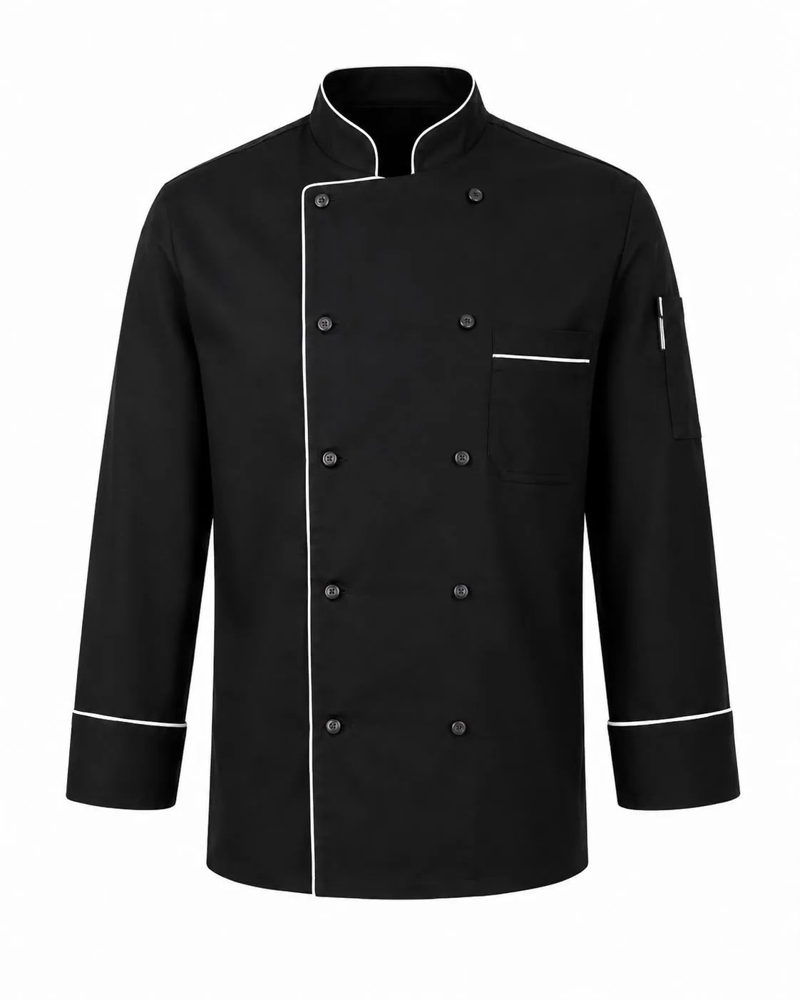
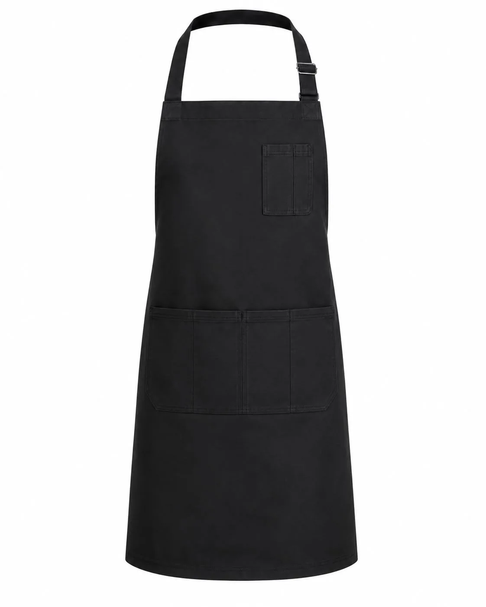
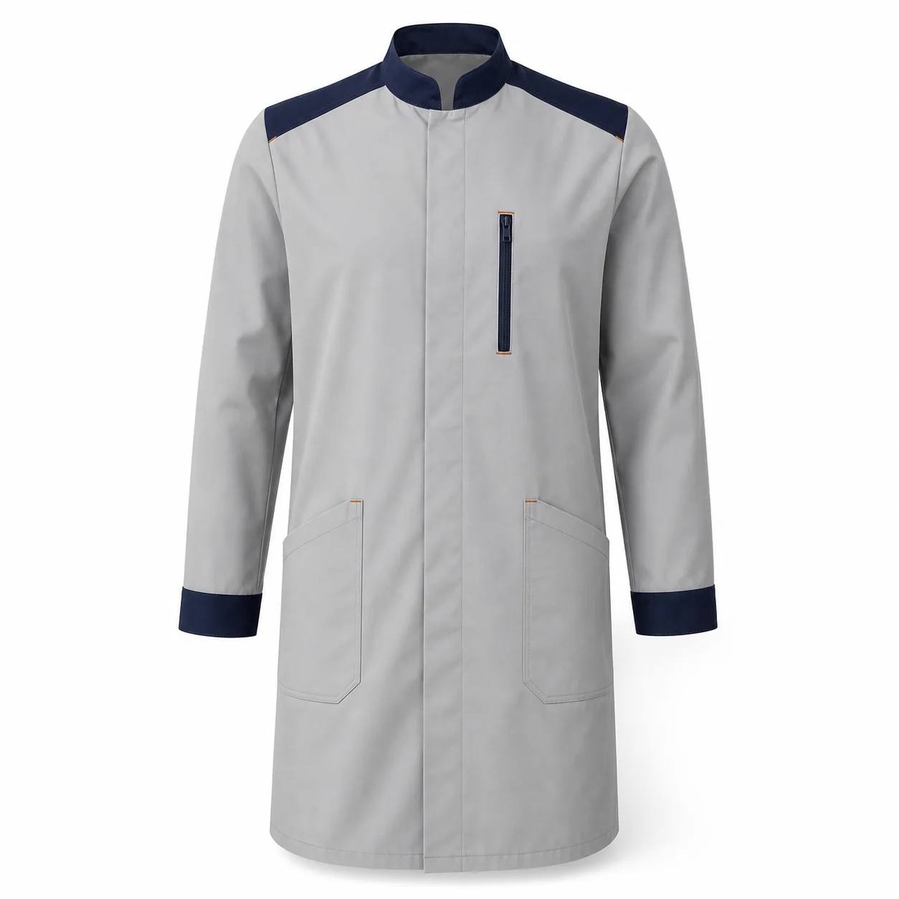

Misafir temaslı ekipler
Düzgün görünüm, renk tutarlılığı, leke yönetimi ve vardiya boyunca konfor birlikte değerlendirilir.
Resepsiyon, kat hizmetleri, mutfak, restoran, teknik servis ve açık saha ekiplerini aynı marka dili altında buluşturan personel kıyafetleri üretiyoruz. Minimum özel üretim siparişi 50 adet; Pendik / İstanbul'dan Türkiye geneline hizmet veriyoruz.
Misafirle doğrudan temas eden ekiplerde düzenli görünüm ve marka rengi; kat hizmetlerinde hareket, cep ve kolay bakım; mutfakta hijyen ve çalışma sıcaklığı; teknik ekipte ise dayanım ve işlevsel detaylar önceliklidir. Bu nedenle otel koleksiyonu tek bir modeli çoğaltmak yerine departmanların görevlerine göre planlanır.
Renk, biye, garni, düğme ve logo gibi ortak unsurlar departmanlar arasında görsel bütünlük sağlar. Numune aşamasında kalıp, hareket, kumaş görünümü, yıkama şartı ve logo yerleşimi kontrol edilir.

Mutfak ekibi için kurumsal renk ve detaylarla özelleştirilebilen model.
Ürünü inceleyin →
Servis, bar ve mutfak görevleri için logolu önlük seçeneği.
Ürünü inceleyin →
Bakım ve teknik servis ekipleri için cepli, uzun kollu model.
Ürünü inceleyin →Düzgün görünüm, renk tutarlılığı, leke yönetimi ve vardiya boyunca konfor birlikte değerlendirilir.
Hareketi destekleyen kalıp, işlevsel cep, uygun kol boyu ve sık bakım koşullarına uyum planlanır.
Çalışma sıcaklığı, kapama biçimi, önlük, kolay bakım ve kurumun hijyen prosedürü dikkate alınır.
Dayanıklı dokuma kumaş, cep ve kapama detayları görevde kullanılan ekipmanla birlikte numunede kontrol edilir.
Görevler, çalışan adetleri, sezonlar, bedenler ve teslimat noktaları belirlenir.
Her departmana uygun ürün seçilir; ortak renk, kumaş, garni ve logo dili oluşturulur.
Proje kapsamına göre kalıp, hareket, görünüm, bakım ve logo gerçek üründe onaylanır.
Onaylanan modele göre üretim ve kalite kontrol yapılır; kişi, beden veya departmana göre paketlenir.
Özel üretimde minimum sipariş 50 adettir. Farklı departman ürünlerinin proje toplamında nasıl değerlendirileceği teklif aşamasında netleştirilir.
Kumaş ve aksesuar uygunluğuna göre kurumsal renk, garni, biye, düğme ve logo detayları planlanabilir.
Evet. Her departmana görevine uygun ürün seçilir; ortak renk ve logo detaylarıyla marka bütünlüğü korunur.
Departman, adet, beden, kurumsal renk, logo ve hedef tarihinizi paylaşın.